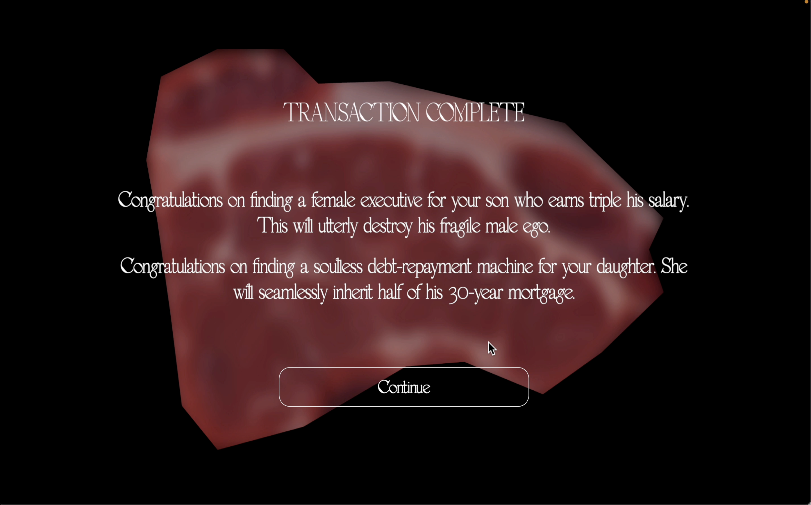
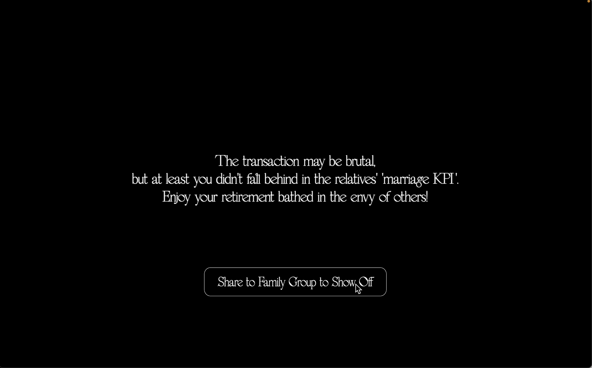

MarriagEmArkeT
Stemming from fieldwork at Chinese matchmaking corners, this project reimagines these pre-digital "analog algorithms" as a claustrophobic, surreal butcher shop. Here, complex human lives are reduced to formatted spreadsheets by parents acting as data brokers, highlighting a deeply flawed "Emotional Capitalism" where intimacy is transmuted into tradable capital.
The project manifests as an interactive 3D web archive and a Unity game. Users interact with a parametric data-visualizer, manipulating sliders to physically distort biological forms based on sociological data. In the game, players navigate 16 "meat specimens" suspended under deceptive "fresh-food lamps," utilizing a "System Glitch" mechanic to toggle the light and expose the harsh individual truths beneath the beautified data.
To realize this computational critique, I seamlessly integrated AI tools into a multi-software workflow while maintaining full creative direction. Using Tripo AI, I generated initial 3D base-meshes for the "flesh" specimens, which I then imported into Blender for iterative manual sculpting to achieve intricate organic textures.
Furthermore, I utilized Gemini to optimize the Website and Unity codebase, debug complex interactions, and even assist in the production of the background music, demonstrating a fluid collaboration between human intent and generative AI capabilities.
The transformation from sociological observation to a surreal space is a process of continuously stripping away reality and reconstructing "pain."
WHITE LIGHTING (SYSTEM GLITCH/TRUTH): When the player flips the switch, the environment instantly transitions to a harsh, cold, clinical white light. This "system glitch" strips away all beautification parameters, revealing the erased individual truths behind the meat—unfulfilled ambitions, hidden debts, or the painful cries of subjectivity.




Project Website ->